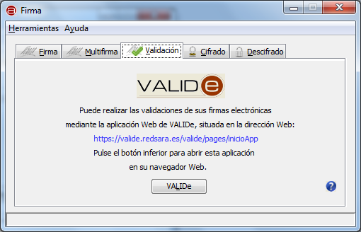

En la pestaña "Validación" se nos muestra la información para acceder a la herramienta de validación de firmas VALIDe. Esta herramienta es ajena a la Interfaz de Escritorio del Cliente @firma y requiere acceso a Internet para poder hacer uso de ella.

Al pulsar el icono de ayuda se muestra la ventana de ayuda para el menú "Validación".
Al pulsar el botón "VALIDe" se abrirá un navegador Web y cargará la página de VALIDe.